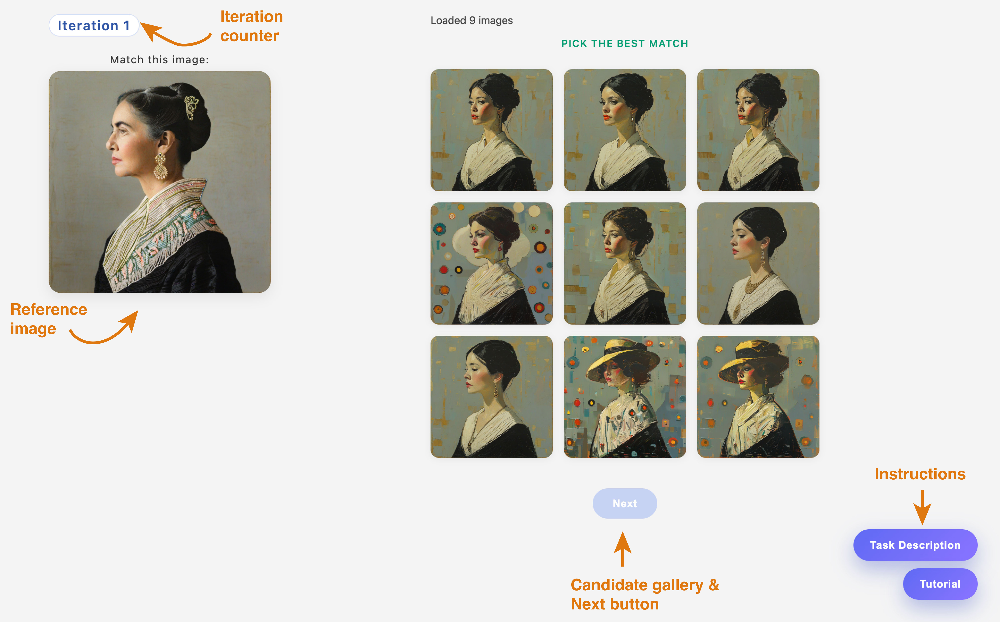
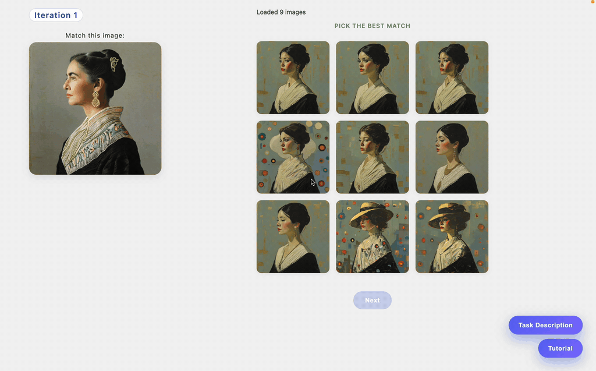
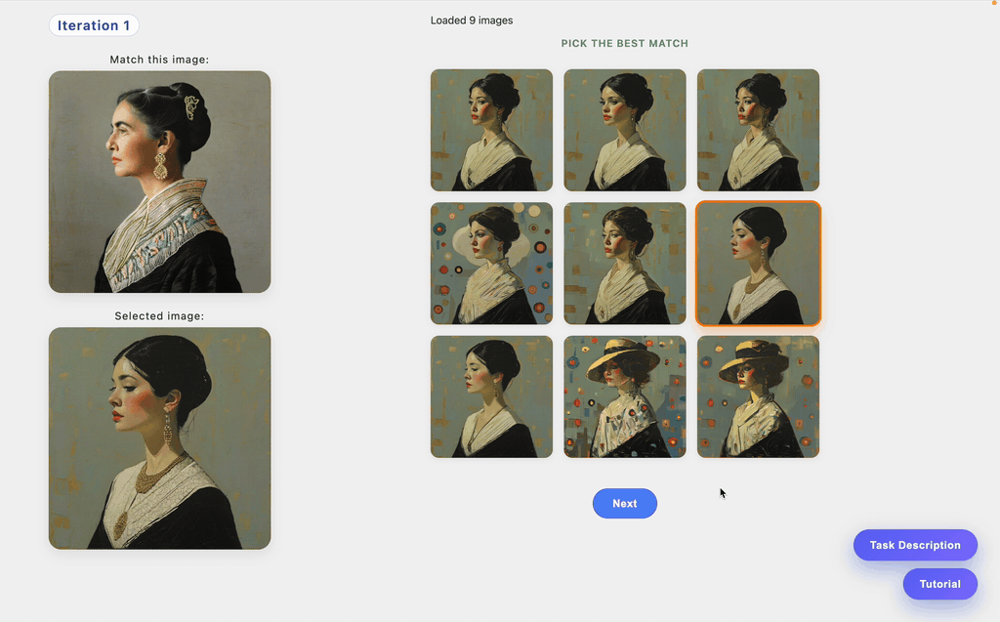

1. Interface Overview
This interface asks you to select the image that best matches a reference image.
- At the top left, an iteration counter shows your current progress.
- On the left, you will see the reference image, labeled “Match this image”.
- On the right, you will see a grid of candidate images.
- A Next button at the bottom allows you to advance after making your selection.
- In the bottom-right corner, the task description and this interface tutorial are available at any time.

2. Image Selection and Zoom-In
Your task is to choose the candidate image that is most visually similar to the reference.
- Click on a candidate image to select it.
- When an image is selected, a zoomed view of the selected image automatically appears below the reference image.
- You may click different candidate images to change your selection and update the zoomed view.
Only one image can be selected at a time.

3. Confirming Your Choice and Continuing
Once you have selected an image:
- Click Next to confirm your choice and move on to the next iteration.

4. Instructions
The task description and this interface tutorial are available at any time.
To access them, click the buttons located in the bottom-right corner of the interface.